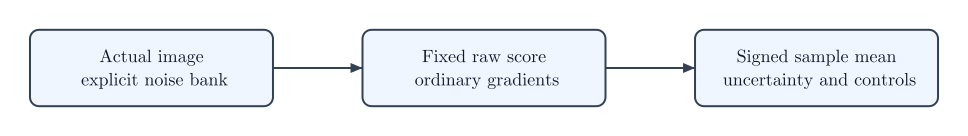
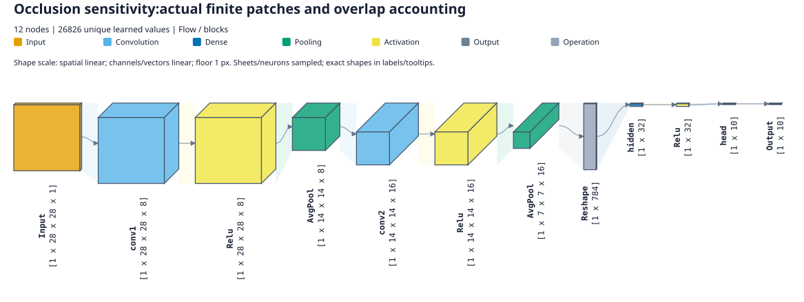
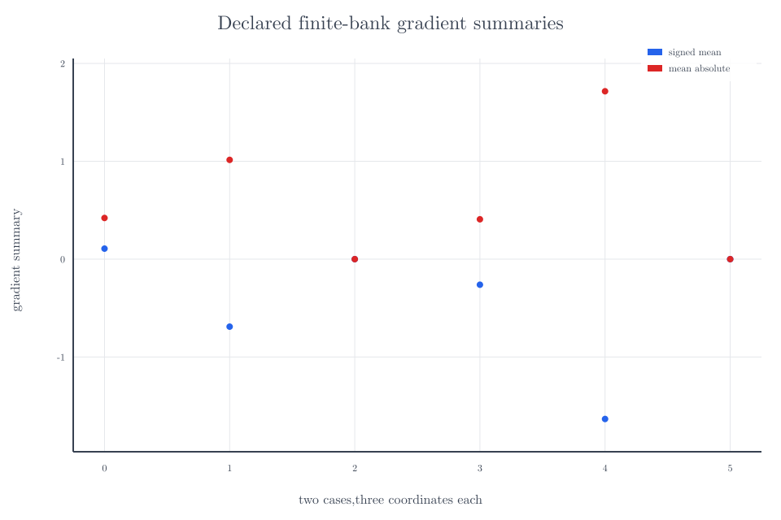
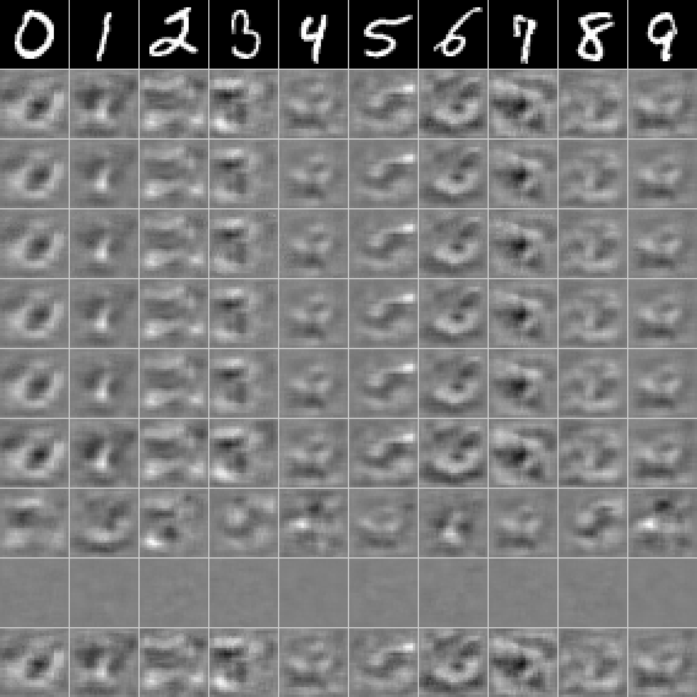
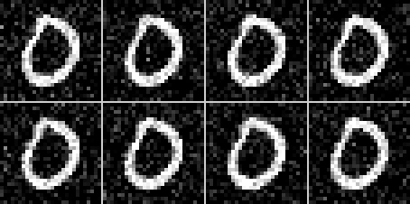
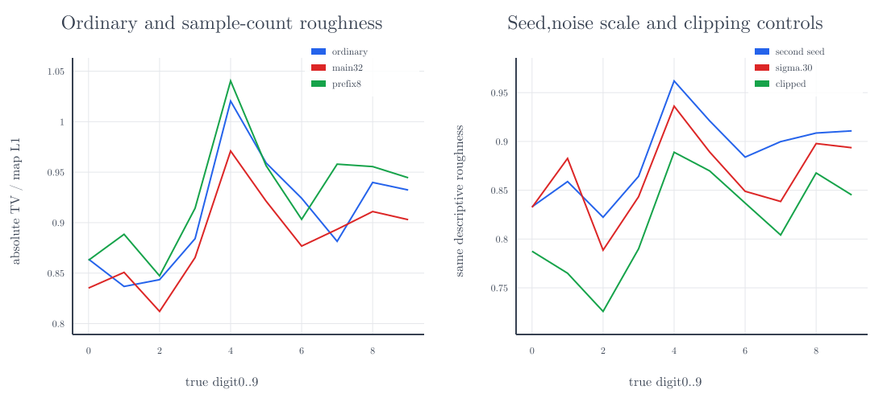

SmoothGrad:explicit noisy observations and signed gradient means
Abstract
Local image-score gradients can vary sharply across nearby inputs. Average ordinary fixed-target raw-score derivatives over a saved Gaussian bank for genuine MNIST images,and inspect finite-sample uncertainty,off-domain inputs,and clipping,target and initialization controls.
Source example: examples/cpp/source/nn/1_convolutional_neural_networks/1.11_interpretability/smoothgrad.cpp.
The method
With fixed classc,standardized noisesz_kand scalesigma,the primary estimator is the signed mean:
All points,ordinary derivatives,statistics and plot values remain tensors. The Gaussian bank is explicit,paired controls share it,and clipped inputs define a separate estimator. No new model fit or optimizer is needed for this frozen-model MonteCarlo average.
The concept diagram below is drawn by dm::graphics::Diagram. Its editable C++
source is the complete block below; regeneration uses the same datamunge toolchain
as the numerical examples. Exports consume the saved local SVG.
#include <dm/dm.hpp>
int main() {
std::filesystem::create_directories("build");
dm::graphics::Diagram diagram;
diagram.node("n0", {0.0, 0}, "Actual image\n explicit noise bank");
diagram.node("n1", {5.2, 0}, "Fixed raw score\n ordinary gradients");
diagram.node("n2", {10.4, 0}, "Signed sample mean\n uncertainty and controls");
diagram.edge("n0", "n1").edge("n1", "n2");
diagram.save_svg("build/smoothgrad_concept.svg");
}
What is averaged,and what is held fixed?
The shared MNIST classifier is frozen at its validation-selected checkpoint from [vanilla saliency](vanilla_saliency.mepml),which shows all96tensor Adam updates and all200held-out errors. This report performs no new classifier fitting. Use the same ten genuine first occurrences of true digits0..9,source IDs and fixed learned top/runner categories. No noisy sample reselects its target.
The primary estimator is the SIGNEDmean of ordinary raw-score input gradients. Meanabsolute gradient,meansquared gradient and absolute value of the signed mean are different summaries;none silently replaces the primary estimator. Perturb normalized pixels with explicit sigma.15Gaussian noise. The primary bank is UNCLIPPED,so it evaluates the classifier outside the training[0,1]domain. Clipping noisy inputs changes the sampled distribution and is a labelled control.
Executed tensor architecture
The diagram shows the forward MNIST CNN that the attribution or feature-optimization method inspects; the attribution algorithm is explained separately.
This figure executes the inference configuration shown in the code, using a zero-valued shape probe without fitting or loading a checkpoint. Named stage boundaries group whole subgraphs where available; other nodes retain functional-layer detail. Exact batch-inclusive shapes and reachable parameter totals come from the trace. Shared linear scales map spatial dimensions and channel counts to blocks; the one-pixel visibility floor is disclosed in the legend. Labels use compact monospace text, rotate counterclockwise and sit beside their own glyphs. Arrows flow left to right; wide diagrams scroll at native size on the website.
#include <dm/dm.hpp>
int main() {
namespace n = dm::nn;
namespace m = n::models;
n::set_num_threads(2);
std::filesystem::create_directories("build");
n::ParameterStore p(1103);
n::Module architecture_model(
[&](const n::Tensor& image) { return m::SaliencyCnn(p, image).logits; },
"SmoothGrad:explicit noisy observations and signed gradient means");
n::ModelPlotOptions options;
options.style = n::ModelPlotStyle::Flow;
options.detail = n::ModelPlotDetail::Blocks;
options.labels = {.type = n::ModelPlotLabel::NameAndShape, .size = 12, .wrap = 24};
options.spacing = {.layer = 24, .lane = 12, .label = 8, .margin = 20};
options.sizing.spatial_size = 96;
options.sizing.channel_size = 42;
options.sizing.minimum_extent = 1;
options.opacity = .8;
const auto diagram = architecture_model.plot(n::zeros({1, 28, 28, 1}), options);
diagram.save_svg("build/smoothgrad_architecture.svg");
std::print(
"{} displayed nodes; {} reachable learned values.\n",
diagram.nodes().size(),
diagram.parameter_count());
}12 displayed nodes; 26826 reachable learned values.

A finite-bank hand check
A linear score with gradient[1,-2,0]has the same mean gradient under any noise bank and zero sample variance. A quadratic score with ordinary derivative c*x has a finite-bank mean c*mean(noisy x),which need not equal c*original x. Sigma0recovers the ordinary derivative. Meanabsolute generally exceeds abs(mean). All these facts are tested with fixed explicit noise and different callback batches.
#include <dm/dm.hpp>
int main() {
namespace n = dm::nn;
namespace m = n::models;
const auto x = n::from_vector(std::vector<float>{.1f, .3f, .5f, -.2f, .7f, 1.2f}, {2, 3}),
t = n::zeros({2}, n::DType::Int32),
c = n::from_vector(std::vector<float>{1, -2, 0}, {3});
const auto bank = m::SmoothGradNoise(x.shape(), 32, 1171);
const auto linear =
m::SmoothGrad(x, t, bank, .5f, false, 7, [&](const n::Tensor &p, const n::Tensor &) {
return n::ones(p.shape()) * c;
});
const auto quadratic =
m::SmoothGrad(x, t, bank, .5f, false, 1, [&](const n::Tensor &p, const n::Tensor &) {
return p * c;
});
const auto expected =
(n::mean(quadratic.noisy_input.to(n::DType::Float64), {0}) * c.to(n::DType::Float64))
.to(n::DType::Float32);
std::print("Linear mean {},variance {};quadratic finite-bank maxparity "
"{:.9g};meanabs-minus-absmean {}.\n",
linear.mean, linear.sample_variance,
n::max(n::abs(quadratic.mean - expected)).item(),
quadratic.mean_absolute - n::abs(quadratic.mean));
auto plot = dm::graphics::RPlot::create();
plot.points(n::arange(0, 6).to_vector<double>(),
quadratic.mean.reshape({6}).to_vector<double>(), "signed mean", {37, 99, 235})
.points(n::arange(0, 6).to_vector<double>(),
quadratic.mean_absolute.reshape({6}).to_vector<double>(), "mean absolute",
{220, 38, 38})
.title("Declared finite-bank gradient summaries")
.x_label("two cases,three coordinates each")
.y_label("gradient summary");
plot.save_svg("build/smoothgrad_fixture.svg");
}Linear mean float32[2, 3] [[1, -2, 0], [1, -2, 0]],variance float32[2, 3] [[0, 0, 0], [0, 0, 0]];quadratic finite-bank maxparity 0;meanabs-minus-absmean float32[2, 3] [[0.313195, 0.324553, 0], [0.146033, 0.0820705, 0]].

Explicit banks and complete real-image controls
Tensor Box–Muller transformations use source-compatible mt19937raw draws, seed1171. Keep32replicas,an exact eight-replica prefix,an independent seed1173, double sigma.30,clipped sigma.15,runner-up,actual-initial weights and sigma0. Paired controls reuse the same standardized bank. Float64tensor arithmetic forms noisy points,then Float32rounds before optional clipping;ordinary gradients are evaluated at those points. Double reductions produce signed/magnitude means,unbiased sample variance and sqrt(variance/samplecount)standard errors. No learned parameter,optimizer or hidden random draw enters these summaries. The primary bank places114211of250880noisy coordinates outside[0,1],about45.5%. Its signed mean differs from the ordinary gradient by L1 132.801926;switching to the independent seed changes it by33.9671936. Meanabsolute-minus-absmean sums29.6115341,and mean primary coordinateSEis.00376360933. These measured finite-bank effects remain visible alongside the image gallery.
#include <dm/dm.hpp>
int main() {
namespace n = dm::nn;
namespace m = n::models;
n::set_num_threads(2);
std::filesystem::path cache;
if (const auto *p = std::getenv("DATAMUNGE_DATA_DIR"))
cache = p;
else if (const auto *p = std::getenv("XDG_CACHE_HOME"))
cache = std::filesystem::path(p) / "datamunge/datasets";
else
cache = std::filesystem::path(std::getenv("HOME")) / ".cache/datamunge/datasets";
dm::datasets::prepare_example_data("mnist-assets", cache.string());
const auto pools = m::LoadSaliency(cache / "saliency");
const auto &fit = pools[0];
const auto &validation = pools[1];
const auto &test = pools[2];
n::ParameterStore p(1103);
{
n::NoGradGuard guard;
m::SaliencyCnn(p, n::zeros({1, 28, 28, 1}));
}
auto predict = [&](const n::Tensor &images) {
n::NoGradGuard guard;
std::vector<n::Tensor> parts;
for (std::int64_t start = 0; start < images.size(0); start += 32)
parts.push_back(
m::SaliencyCnn(p, n::slice_axis(images, 0, start,
std::min<std::int64_t>(start + 32, images.size(0))))
.logits);
return n::concat(parts, 0);
};
for (const auto &[key, value] : n::load_npz("build/vanilla_saliency_best.npz"))
p.set(key, value.clone());
std::vector<std::int64_t> chosen;
const auto labels = test.labels.to_vector<int>();
for (int digit = 0; digit < 10; ++digit) {
const auto it = std::find(labels.begin(), labels.end(), digit);
chosen.push_back(it - labels.begin());
}
const auto examples = m::SaliencyRows(test, chosen);
const auto z = predict(examples.images);
const auto sorted = n::argsort(z, true);
const auto targets = n::select(sorted, 1, 0).to(n::DType::Int32),
runners = n::select(sorted, 1, 1).to(n::DType::Int32);
const auto before = p.flatten();
n::ParameterStore random(1103);
{
n::NoGradGuard guard;
m::SaliencyCnn(random, n::zeros({1, 28, 28, 1}));
}
for (const auto &[key, value] : n::load_npz("build/vanilla_saliency_initial.npz"))
random.set(key, value.clone());
const auto random_before = random.flatten();
m::InputGradientFunction gradient = [&](const n::Tensor &points, const n::Tensor &classes) {
return m::VanillaInputGradient(
[&](const n::Tensor &x) {
return m::SaliencyCnn(p, x).logits;
},
points, classes);
};
m::InputGradientFunction initial_gradient = [&](const n::Tensor &points,
const n::Tensor &classes) {
return m::VanillaInputGradient(
[&](const n::Tensor &x) {
return m::SaliencyCnn(random, x).logits;
},
points, classes);
};
const auto bank = m::SmoothGradNoise(examples.images.shape(), 32, 1171),
second = m::SmoothGradNoise(examples.images.shape(), 32, 1173),
prefix = n::slice_axis(bank, 0, 0, 8);
const auto ordinary = gradient(examples.images, targets);
std::vector<std::pair<std::string, m::SmoothGradResult>> groups;
groups.push_back(
{"main", m::SmoothGrad(examples.images, targets, bank, .15f, false, 32, gradient)});
groups.push_back(
{"prefix", m::SmoothGrad(examples.images, targets, prefix, .15f, false, 32, gradient)});
groups.push_back({"second_seed", m::SmoothGrad(examples.images, targets, second, .15f, false,
32, gradient)});
groups.push_back({"large_sigma",
m::SmoothGrad(examples.images, targets, bank, .30f, false, 32, gradient)});
groups.push_back(
{"clipped", m::SmoothGrad(examples.images, targets, bank, .15f, true, 32, gradient)});
groups.push_back(
{"runner", m::SmoothGrad(examples.images, runners, bank, .15f, false, 32, gradient)});
groups.push_back({"initial", m::SmoothGrad(examples.images, targets, bank, .15f, false, 32,
initial_gradient)});
groups.push_back(
{"zero", m::SmoothGrad(examples.images, targets, n::slice_axis(bank, 0, 0, 2), 0.f,
false, 32, gradient)});
const auto repeat = m::SmoothGrad(examples.images, targets, bank, .15f, false, 32, gradient);
const auto replay = n::max(n::abs(groups[0].second.mean - repeat.mean)),
zero = n::max(n::abs(groups.back().second.mean - ordinary));
if (replay.item() != 0 || zero.item() > 2e-6 || before != p.flatten() ||
random_before != random.flatten() ||
n::max(n::abs(prefix - m::SmoothGradNoise(examples.images.shape(), 8, 1171))).item() !=
0)
return 1;
std::print("Exact replay {},sigma0vanilla max {:.9g};all16selected/controlarrays "
"unchanged;actual source IDs {},targets {},runners {}.\n",
replay.item(), zero.item(), examples.source, targets, runners);
n::NamedTensors arrays{{"images", examples.images},
{"source_ids", examples.source},
{"targets", targets},
{"runners", runners},
{"ordinary", ordinary}};
auto peak = n::max(n::abs(ordinary));
for (const auto &[name, result] : groups)
peak = n::maximum(peak, n::max(n::abs(result.mean)));
std::vector<n::Tensor> display{examples.images, ordinary / (peak * 2) + .5};
std::print("| group | samples | total L1change from ordinary | mean MonteCarloSE | "
"off-domain noisy coordinates |\n|---|---:|---:|---:|---:|\n");
for (const auto &[name, result] : groups) {
for (const auto &[key, value] : std::vector<std::pair<std::string, n::Tensor>>{
{"mean", result.mean},
{"mean_absolute", result.mean_absolute},
{"mean_square", result.mean_square},
{"sample_variance", result.sample_variance},
{"standard_error", result.standard_error},
{"standard_noise", result.standard_noise},
{"noisy_input", result.noisy_input},
{"sample_gradient", result.sample_gradient}})
arrays.push_back({name + "_" + key, value});
display.push_back(result.mean / (peak * 2) + .5);
const auto outside = n::sum(
n::logical_or(n::less(result.noisy_input, 0.), n::greater(result.noisy_input, 1.))
.to(n::DType::Int32));
std::print("| {} | {} | {:.9g} | {:.9g} | {} |\n", name, result.standard_noise.size(0),
n::sum(n::abs(result.mean - ordinary)).item(),
n::mean(result.standard_error).item(), outside.item());
}
n::save_npz("build/smoothgrad_maps.npz", arrays);
n::save_image_grid(n::select(n::slice_axis(groups[0].second.noisy_input, 0, 0, 8), 1, 0),
"build/smoothgrad_noisy.png", 4, 0, 1, 2, .8, 4);
std::filesystem::copy_file("build/smoothgrad_noisy.png", "figures/smoothgrad_noisy.png",
std::filesystem::copy_options::overwrite_existing);
n::save_image_grid(n::concat(display, 0), "build/smoothgrad_maps.png", 10, 0, 1, 2, .8, 4);
}Exact replay 0,sigma0vanilla max 0;all16selected/controlarrays unchanged;actual source IDs int32[10] [66921, 63380, 68936, 62280, 62094, 65222, 61209, 61721, 69402, 62570],targets int32[10] [0, 1, 2, 3, 9, 5, 6, 7, 8, 9],runners int32[10] [2, 6, 3, 5, 4, 9, 1, 9, 5, 4].
| group | samples | total L1change from ordinary | mean MonteCarloSE | off-domain noisy coordinates |
|---|---|---|---|---|
| main | 32 | 132.754883 | 0.00377080264 | 114211 |
| prefix | 8 | 140.270554 | 0.00740203587 | 28531 |
| second_seed | 32 | 130.6763 | 0.00376872718 | 114561 |
| large_sigma | 32 | 160.626968 | 0.00431962311 | 118066 |
| clipped | 32 | 141.988037 | 0.00279548462 | 0 |
| runner | 32 | 512.757385 | 0.00363879255 | 114211 |
| initial | 32 | 444.615265 | 0.00111185107 | 114211 |
| zero | 2 | 0 | 0 | 0 |


Complete per-case roughness and uncertainty diagnostics
Measure local absolute first differences divided by total absolute map magnitude. This dimensionless roughness is a descriptive statistic,not a quality score. Compare signed means and ordinary derivatives for all ten cases. Also retain pixelwise MonteCarloSE and meanabsolute-minus-absmean,which measures cancellation in the signed sample mean. Larger sample count does not guarantee every finite- bank comparison improves;independent-seed and clipping controls remain visible.
#include <dm/dm.hpp>
int main() {
namespace n = dm::nn;
std::map<std::string, n::Tensor> a;
for (const auto &[key, value] : n::load_npz("build/smoothgrad_maps.npz"))
a.emplace(key, value);
std::vector<n::Tensor> curves;
std::print("| summary | per-case roughness0..9 |\n|---|---|\n");
for (const std::string key : {"ordinary", "main_mean", "prefix_mean", "second_seed_mean",
"large_sigma_mean", "clipped_mean"}) {
const auto x = a.at(key).to(n::DType::Float64);
const auto dy = n::sum(n::abs(n::slice_axis(x, 1, 1, 28) - n::slice_axis(x, 1, 0, 27)),
{1, 2, 3}),
dx = n::sum(n::abs(n::slice_axis(x, 2, 1, 28) - n::slice_axis(x, 2, 0, 27)),
{1, 2, 3}),
scale = n::sum(n::abs(x), {1, 2, 3});
const auto rough = (dy + dx) / n::maximum(scale, n::full({10}, 1e-30, n::DType::Float64));
curves.push_back(rough);
std::print("| {} | {} |\n", key, rough);
}
std::print("All7840meanabs-minus-absmean sum {:.9g};mean primary MonteCarloSE "
"{:.9g};independent-seed signed-mean L1 {:.9g}.\n",
n::sum(a.at("main_mean_absolute") - n::abs(a.at("main_mean"))).item(),
n::mean(a.at("main_standard_error")).item(),
n::sum(n::abs(a.at("main_mean") - a.at("second_seed_mean"))).item());
auto left = dm::graphics::RPlot::create(), right = dm::graphics::RPlot::create();
const std::vector<std::string> labels{"ordinary", "main32", "prefix8",
"second seed", "sigma.30", "clipped"};
const std::vector<dm::graphics::RGB> colors{{37, 99, 235}, {220, 38, 38}, {22, 163, 74}};
for (int i = 0; i < 3; ++i) {
left.lines(n::arange(0, 10).to_vector<double>(), curves[i].to_vector<double>(), labels[i],
colors[i]);
right.lines(n::arange(0, 10).to_vector<double>(), curves[i + 3].to_vector<double>(),
labels[i + 3], colors[i]);
}
left.title("Ordinary and sample-count roughness")
.x_label("true digit0..9")
.y_label("absolute TV / map L1");
right.title("Seed,noise scale and clipping controls")
.x_label("true digit0..9")
.y_label("same descriptive roughness");
auto layout = dm::graphics::RLayout::create(1, 2);
layout.add(left).add(right).size(1100, 500).fit_panels().save_svg(
"build/smoothgrad_diagnostics.svg");
}| summary | per-case roughness0..9 |
|---|---|
| ordinary | float64[10] [0.863833, 0.8368, 0.84353, 0.884158, 1.02042, 0.959126, 0.92417, 0.881471, 0.93982, 0.932316] |
| main_mean | float64[10] [0.835235, 0.850751, 0.812074, 0.865442, 0.970953, 0.92125, 0.876792, 0.893406, 0.910996, 0.902957] |
| prefix_mean | float64[10] [0.862784, 0.888468, 0.847287, 0.914292, 1.04036, 0.956415, 0.903287, 0.957928, 0.955534, 0.944454] |
| second_seed_mean | float64[10] [0.833086, 0.858901, 0.822352, 0.864278, 0.961993, 0.921127, 0.883951, 0.899824, 0.90862, 0.91083] |
| large_sigma_mean | float64[10] [0.832503, 0.882609, 0.788661, 0.843403, 0.936163, 0.889239, 0.848906, 0.83848, 0.89784, 0.893588] |
| clipped_mean | float64[10] [0.787488, 0.764983, 0.725855, 0.790011, 0.888925, 0.869841, 0.836877, 0.804138, 0.867707, 0.845159] |
All7840meanabs-minus-absmean sum 29.6689281;mean primary MonteCarloSE 0.00377080264;independent-seed signed-mean L1 34.2645264.

Regenerate adjacent views from this run
#include <dm/dm.hpp>
int main(){std::filesystem::copy_file("build/smoothgrad_noisy.png","build/export_smoothgrad_noisy.png",std::filesystem::copy_options::overwrite_existing);}Conclusion
Exact finite-bank fixtures distinguish signed means from magnitude summaries. Original images and actual noisy points expose domain extrapolation;complete target,seed,scale,clipping and initialization controls show estimator dependence. Smoother-looking maps and MonteCarloSE do not establish causal importance.
References
- [Smilkov et al.(2017),SmoothGrad:removing noise by adding noise](https://arxiv.org/abs/1706.03825).